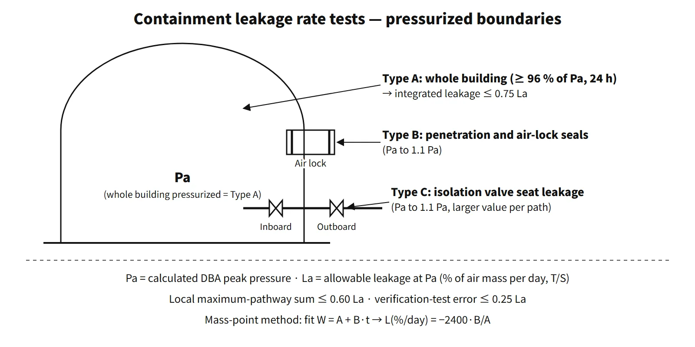

Systems & Equipment · C-SY-007
Containment Leakage Rate Testing (ILRT/LLRT) — Keeping the Leakage Measured at Pa Within 75 % and 60 % of La
How the leakage measured at the peak accident pressure Pa is kept below 0.75 La for the whole building and 0.60 La for penetrations and valves.
Containment leakage rate testing (leak-tightness testing) measures how much the containment leaks at the peak pressure calculated for a design-basis accident (the test pressure Pa) and confirms that it stays, with margin, within the allowable leakage rate (La) of the technical specifications. It is divided into the integrated leakage rate test (ILRT, Type A), which pressurizes the whole building, and local leakage rate tests (LLRT, Types B and C), which pressurize penetrations and isolation valves individually.
The containment is the last of the multiple barriers. This test is the procedure that guarantees, as a number, how leaky that barrier is — and that number, La, is also an input to the accident dose analysis.
Principle and mechanism
Pa and La — the two reference values
- Pa (test pressure): the peak containment pressure calculated for design-basis accident (LOCA, MSLB) conditions. It is not the design pressure. For example, the APR1400 US design certification (DC) has Pa = 51.09 psig (about 0.352 MPa(g)) and a design pressure of 60 psig (0.414 MPa(g), about 0.515 MPa absolute)[4].
- La (allowable leakage rate): the maximum leakage rate allowed at Pa, written as % per day of the air mass inside containment (wt%/day). It is not on a volume basis. For the APR1400 it is 0.1 %/day[4].
Types A, B and C — which leakage boundary each verifies
| Type | Name | Leakage boundary verified | Test pressure |
|---|---|---|---|
| Type A | Integrated leakage rate test | The whole containment (isolated) | At or below design pressure, held at ≥ 96 % of Pa during the test |
| Type B | Penetration leakage rate test | Electrical penetration seals, air locks (barrel pressurization and door seals), fuel transfer tube and equipment hatch gaskets | Pa to 1.1 Pa |
| Type C | Isolation valve leakage rate test | Isolation valve seats (typically by pressurizing the space between the inboard and outboard valves) | Pa to 1.1 Pa |
Type A looks at the "whole", including the B and C paths, in one go, but it does not say where the leak is. So individual paths are located and repaired with Types B and C at each outage, and the whole is confirmed with Type A every few years. In local tests, isolation valves are pressurized in the direction in which isolation is required and tested as they are in the normally closed state, without prior adjustment (to obtain the as-found value).
Absolute method and mass-point method
Type A is measured by the absolute method. The containment is pressurized, isolated and stabilized; then at regular intervals the absolute pressure P, the vapour pressure Pv obtained from the dew point and the volume-weighted mean absolute temperature T are measured to obtain the dry-air mass. In practice, readings from dozens of temperature and dew-point sensors in each subvolume are weighted by subvolume to calculate the dry-air mass.
- W = (P − Pv)·V / (R·T) — V is the free volume and R the gas constant of dry air
- Mass-point method: the points (tᵢ, Wᵢ) are fitted with a least-squares line W = A + B·t, and the leakage rate is L (%/day) = −2400·B/A (t in hours). The 95 % upper confidence limit (UCL) is used for the judgement (ANSI/ANS-56.8)[3].
- Measurement starts after the internal atmosphere has stabilized, and the calculation uses at least 24 hours of stable trend data. A verification test follows, adding an artificial leak of known size (at least 4 hours of data), to check that the measuring system responds correctly. The error must be no more than 0.25 La.
![Conceptual cutaway of a large dry PWR containment with the whole-building Type A boundary outlined, Type B boundaries at the air lock and an electrical penetration, the steel liner, and the Type C boundary at the inboard and outboard isolation valve seats; cards give the Type A test (at or below design pressure, at least 96 percent of Pa, 24 h or more, integrated leakage at most 0.75 La), Type B and Type C tests (Pa to 1.1 Pa, sum of maximum-pathway leakage at most 0.60 La, larger of the two barriers per path) and the definitions of Pa and La with the APR1400 US DC example Pa 51.09 psig, design pressure 60 psig, La 0.1 percent per day](../../assets/images/concepts/c-sy-007-containment-leakage-rate-test/fig1-test-boundaries.webp)
What it means in a plant
Acceptance criteria — why 0.75 and 0.60?
| US App. J Option A | Option B programme (T/S 5.5.x) | |
|---|---|---|
| Type A | Lam < 0.75 La[1] | as-found < 1.0 La (performance criterion); as-left < 0.75 La before return to service (T/S programme) |
| Type B + C sum | < 0.60 La[1] | Maximum-pathway sum < 0.60 La before return to service |
0.75 leaves a 25 % margin for degradation before the next test. 0.60 allots only 60 % of La to the B and C paths, leaving room for the remaining paths such as the concrete and liner and for degradation. The maximum-pathway leakage rate is the larger of the two isolation barriers on a path, and these are summed path by path (not the largest valve overall, nor the sum of the two barriers on a path). It is a conservative sum that still holds if a single failure takes out the better barrier. The amount that actually leaks (the smaller value) is recorded separately in US practice as the minimum-pathway leakage rate.
![Left: 25 hourly points of dry-air mass falling from 100.00 to about 99.96 percent over 24 hours with a least-squares line; B/A = -1.68 x 10^-5 per hour gives L = -2400 B/A = 0.040 percent per day and a 95 percent UCL of 0.042 percent per day. Right: a scale from 0 to 1.0 La (La = 0.1 percent per day) marking 1.0 La (dose input, US Option B as-found), 0.75 La (Type A limit), 0.60 La (B + C maximum-pathway sum) and the example UCL at 0.42 La; a box notes the verification test error limit of 0.25 La](../../assets/images/concepts/c-sy-007-containment-leakage-rate-test/fig2-mass-point-leak-budget.webp)
Technical specifications and dose analysis
- The containment LCO (STS 3.6.1) uses the tests of the leakage rate testing programme (T/S 5.5.x) as its surveillance requirement. If the as-found value exceeds 1.0 La, the containment is inoperable; if it is not restored within 1 hour, the plant goes to Mode 3 within 6 hours and Mode 5 within 36 hours[5].
- La is the leakage input of the accident radiological consequence analysis. For PWRs, leakage is assumed at La for the first 24 hours and at 0.5 La thereafter (RG 1.183)[6]. Because the release is proportional to La, holding La by testing preserves the premise of site dose criteria such as 250 mSv over 2 hours at the exclusion area boundary (EAB).
Regulatory and design criteria
For example, in the United States:
| Basis | Key point |
|---|---|
| 10 CFR 50.54(o); App. A GDC 52 and 53[7] | Obligation to comply with App. J; design permitting ILRT; periodic testing of penetrations |
| 10 CFR 50 App. J Option A (1973) / Option B (1995)[1] | Prescriptive intervals / performance-based intervals |
| RG 1.163 Rev. 1 (July 2023), NEI 94-01 Rev. 3-A (2012)[2] | Type A up to 15 years, Type B 120 months, Type C 75 months |
| ANSI/ANS-56.8-1994[3] | Absolute method, mass-point method, 95 % UCL, verification test |
Intervals: Under Option A the test intervals are prescriptive. Under Option B they are extended on the basis of past performance, allowing up to 15 years for Type A, 120 months for Type B and 75 months for Type C; RG 1.163 Rev. 1 (2023) endorsed the 15-year and 75-month intervals at guidance level.
Easily confused pairs
| Integrated leakage rate test (ILRT) | Structural integrity test (SIT) | Severe-accident pressure assessment | |
|---|---|---|---|
| Purpose | Leak-tightness (leakage rate) | Elastic structural behaviour | Integrity under DEC |
| Pressure | Around Pa (≤ design pressure) | Design pressure × 1.15 | APR1400 maximum 0.60 / allowable 0.85 MPa |
| When | Pre-operational and periodic in-service | Pre-operational (after major modifications if needed) | Analysis |
Key points at a glance
- Definition: leakage rate measurement test confirming the leak-tightness of the containment.
- Pa: peak containment pressure calculated for a design-basis accident (not the design pressure).
- La: leakage rate limit at Pa, % of air mass per day, set in the T/S (APR1400 0.1 %/day).
- Integrated (Type A): whole containment, held at ≥ 96 % of Pa, 24 h or more after stabilizing, absolute and mass-point method L = −2400·B/A, ≤ 0.75 La, verification-test error ≤ 0.25 La.
- Local (Type B): electrical penetrations, air locks, transfer tube / Type C: isolation valves; test pressure Pa to 1.1 Pa.
- Local criterion: sum of maximum-pathway leakage ≤ 0.60 La; individual penetration limits.
- Intervals: prescriptive under Option A; performance-based under Option B (Type A up to 15 years, Type B 120 months, Type C 75 months).
- Meaning: La = leakage input to the accident dose analysis; demonstrates the leak-tight barrier function of the containment.
